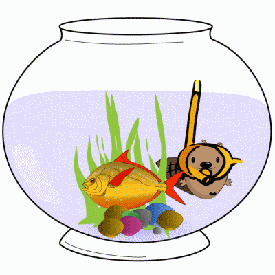
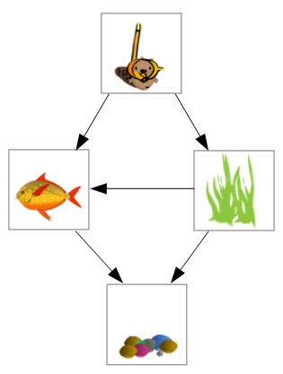

Castor a décoré son aquarium avec des autocollants. Trouvez dans quel ordre Castor a collé les autocollants, et faites-les glisser dans cet ordre.
|  |
En observant l'aquarium, on note que :
Ces observations nous permettent de déduire que les autocollants ont été collés dans l'ordre suivant :
 Dans ce sujet, il fallait trouver un ordre qui respecte un certain nombre de contraintes. Le placement d'une image par dessus une autre sur le dessin implique une contrainte du type "a été collé avant". L'ensemble des contraintes forme un « graphe », comme représenté ci-contre, où chaque flèche correspond à une contrainte et part de l'image qui a été collée en première.
Trouver un ordre qui est compatible avec un graphe est ce que l'on appelle un « tri topologique » des sommets du graphe. Il s'agit d'un problème classique d'algorithmique. Dans cet exemple, il n'y avait qu'un seul ordre possible, mais pour des graphes plus complexes, il peut y en avoir plusieurs.
Au contraire, lorsque le graphe contient un cycle, par exemple si le poisson recouvre les algues, qui recouvrent les cailloux, qui recouvrent le poisson, aucun ordre n'est possible. Le tri topologique ne s'applique qu'aux graphes sans cycles, que l'on appelle les graphes « acycliques ».